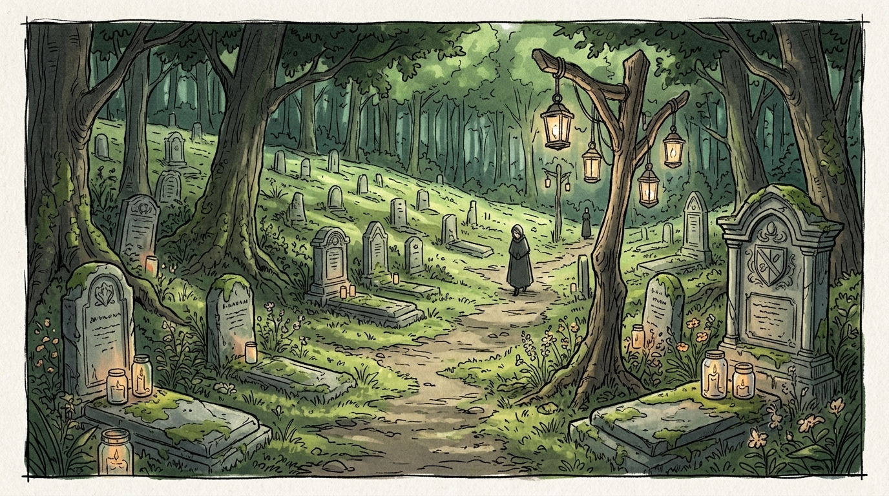
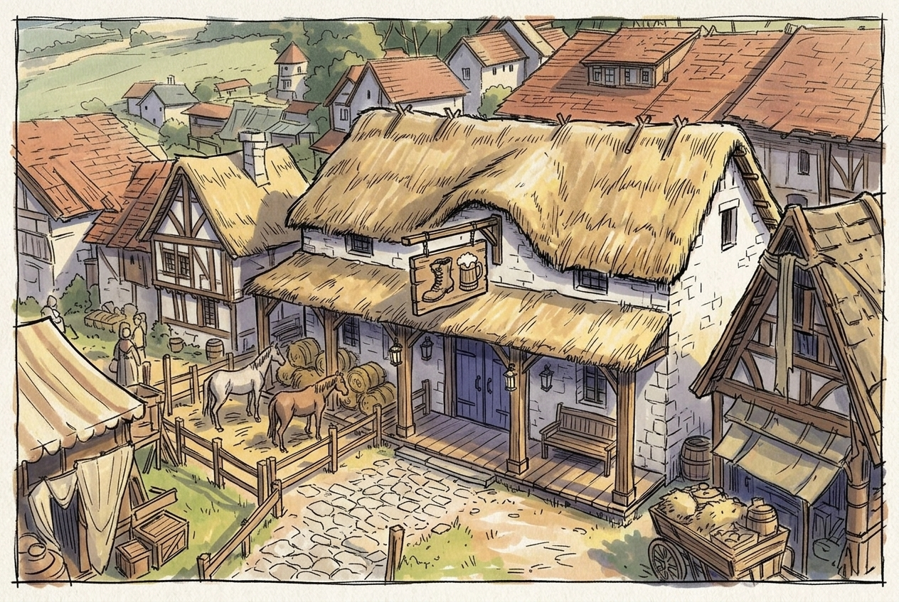

Noxland — Capital
The capital of Azimas, where most of the world's magical energy is concentrated.
- Geography: Built upon a "Convergence Point" of global ley lines. A massive walled metropolis surrounded by satellite villages, hunting forests, and farmland.
- Architecture: Eastern-European high fantasy. Soaring white limestone structures, silver-capped onion domes, tapered spires. White, blue, and silver. Concentric high walls separate the city's tiers.
Key landmarks: Noxland Castle (the central fortress-palace); Eden Academy (a sprawling campus in the Magical District); The Grand Market (the kingdom's primary hub of luxury trade and alchemical shops).
- Economy: The wealthiest city in the known world, powered by enchanted goods and royal taxation.
- Politics: Absolute monarchy. Home to the Black Vine Coven.
- Defense: Protected by the Golden Lions, an elite knight order.

Fairhaven — Craft Village
- Geography: A lush valley of rolling emerald hills, bisected by the High-Road to Noxland, surrounded by the Wild Forest — an ancient fairy forest.
- Architecture: Pastoral cottagecore. Whitewashed stone houses with thick thatch roofs and "living wood" elements. Gates and doors painted deep indigo or black. Large protective obelisks ring the village.
Key landmarks: The Traveler's Rest (a two-story tavern and inn, the social hub); the Lantern-Grove Cemetery (a huge graveyard on the forest's edge where all surrounding townsfolk are buried); Selena's hut (the Octopus Coven's base).
- Economy: High-yield agriculture and crafts. Wealthy due to proximity to the capital and the road.
- Politics: Co-governed by a Village Elder and the Coven's Head. Strict adherence to the Fairy Council's requirements.
- Protection: Under the Octopus Coven and Fairy Council.
Restless Cemetery
Due to the high concentration of magic and the proximity of fairies, the area is notorious for attracting evil spirits and necromancers, making the cemetery restless.
A regular Sunday fair fills the village with festivities and music.



Sidehill — Mining Hub
"This is where magic disappears and unfiltered power appears."
- Geography: Built into the steep terraced slopes of the Iron-Shoulder Range. Extreme verticality — streets are mostly stone stairs and wooden ramps. Snow-capped peaks year-round, with villages at the foot.
- Architecture: Nordic. Low-slung sod-roofed longhouses, deep granite foundations against tremors, dark-stained pine, runic carvings, massive iron-reinforced pulley-elevators for ore.
Key landmarks: The Maw (a colossal tiered mine descending miles into the mountain); The Silence (a high-security prison for mages, lined with raw antimagic ore); the Smelter-District (a permanent cloud of black smoke over the lower tiers). Malfurion's lair lies on the far side of the mountain.
- Economy: Wealthy but grim. Monopolizes "antimagic ore" — a lead-heavy, magic-nullifying ore.
- Politics: Governed by the Council of Hammers. Militaristic labor laws; a "work or die" philosophy.
The Anti-Magic Field
The stored ore creates a "Dead Zone." Within town limits spells fizzle, magical items go dormant, and mages suffer chronic migraines or nausea.

Whitevale — Port City
A port city a week's drive from the capital.
- Geography: A crescent bay flanked by towering white limestone cliffs. Tiered elevation — Lower Docks, The Terrace (trade), The High Crown (nobility). Rumors of mermaids.
- Architecture: Medieval-industrial. Timber-framed houses, steep grey slate roofs, a defensive sea wall with iron-grated water gates.
Key landmarks: Academy of Navigation (trains everyone connected with the sea); the Salt Market (an open-air bazaar of brine, spices, and dried fish); the Chain-Span (a heavy drawbridge to the naval shipyards); the Black Lighthouse (on a tiny, reputedly cursed island where magic fails — it has burned twice).
- Economy: A transit city with high merchant turnover, earning on taxes.
- Politics: Governed by local lords. High corruption and crime.
- Mood: Perpetual morning mist, overcast skies, bustling and cramped. Tensions rising after a recent pirate attack.